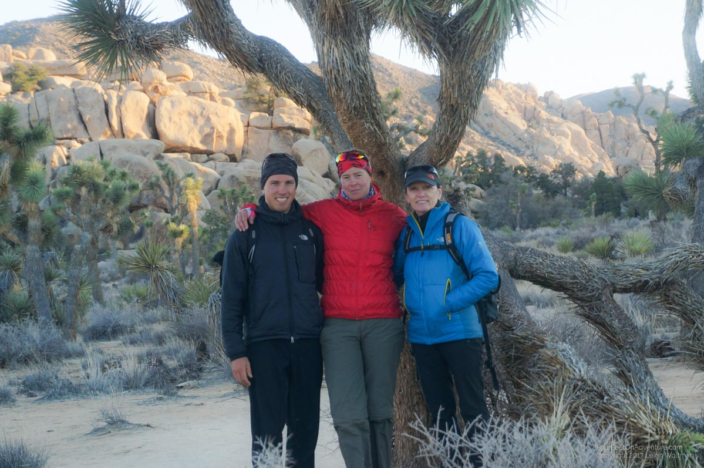
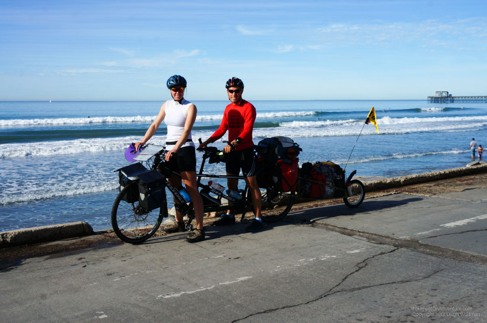
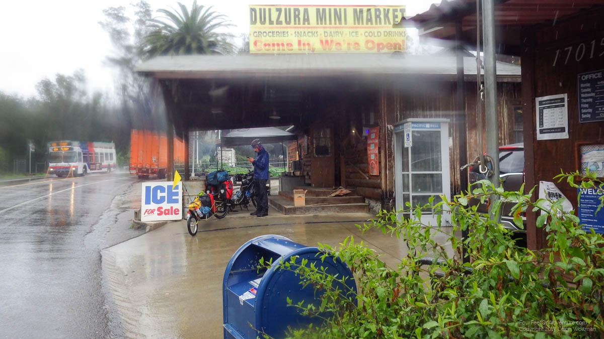

Email Us
Please send us an email, we would love to hear from you!

We were excited and a little nervous about what Mexico would bring. Also, we were pretty wet and cold, as it just kept on raining in San Diego.
We had been hearing about quite a few protests in Tijuana about the Mexican gasoline prices spiking which apparently were not violent but were enough for the US to close the first border crossing from the coast. Furthermore, it is said to be the busiest border crossing over land in the world, and has been in the news quite negatively a lot lately because of drug wars, violence, and if you want to believe the rumours, all that awaits you across the border are rows and rows of beggars. The next crossing towards the east is also into Tijuana so we decided to pedal towards the third crossing. This town, Tecate, is supposed to be fairly quiet and will take us down a different highway toward Ensenada.
In all of this, we have experienced so much generosity over the past couple days it has made us feel very humbled. First, we had our WarmShowers host in San Diego Nicole who stored our bike while my mom visited and allowed us to stay multiple nights in her backyard.

From there, we planned a short day up to a campground on the edge of San Diego. On the ride up the hill we got our first flat tire. The culprit turned out to be a thorn from some type of bush. The patch appears to be holding well. That evening, the forecast for 6 days of rain started. Our tent was in a stream by morning and water had worked it way through the floor. We packed up with a little break in the clouds and started on our way out of town. But not without a last stop a Trader Joe’s. This organic-ish grocery store has lots of good dried food and has started our latest food trend of buying an entire chocolate cake and eating it throughout the day. :)

We filled our bottle up with gas which is always an entertaining experience. The pumps here ask for a zip code with your credit card so we always have to pre-pay the gas. We learned to make it seem like we are getting a lot of gas, so we usually give a 5, 10 or 20 dollar bill. We then put our 38 cents of gasoline in our bottle and go back to get a refund. At this particular pump, Annette threw down an insufficient collection of pennies and nickels and the attendant said that would cover it and gave the 20 dollar bill back. We’ve had several times where our gas has been given free.
However, even chocolate cake wasn’t enough to hide the fact that Annette was struggling with fatigue today. We stopped at Starbucks to try and find an AirBnb to get a rest day instead. While we were there, a lady stopped and asked us where we were biking and what we were doing. When we explained we were looking for a place to stay she offered a room to us. It was a little 3 km backtrack but they were very nice. They allowed us to cook, do laundry and dry our tent in their garage, and all we had to do was tell our biking story, great people.
In the morning they saw us off to more heavy rain. We climbed steadily hoping to make it to the Mexican border. However, the climb was intense and the rain never let up. The cliffs surrounding the road were dropping rock fall on the road, we crossed larger boulders on the road but saw only the moments that small pebbles would rain down. About every third car that passed us was from the US border control. We heard rumours about helicopters, but the weather must have kept them in cause all that we saw in the sky was gray, cloudy and lots of raindrops. We were occasionally passed by ‘snow plows’ clearing rocks and debris from the road. We heard later that the road was closed for a while. Potentially when we were on it? We don’t know, we don’t go up that fast that we would have noticed ;).

Eventually we made it to the turnoff for the border, but it was already getting somewhat close to sunset and we didn’t know how long the border wait would be. We have arranged to stay with someone on WarmShowers in Tecate, just a couple kilometers from the crossing, but with our spanish translated directions we didn’t want to be biking in the dark. As much as we wanted to skip the USA on Trump’s inauguration day we continued the climb to try and find a campground stateside. A sign for a cafe had us thinking a warm dinner would be good, but when we arrived at the resort it was a breakfast and lunch establishment only. The resort had some small camping cabins but we the host rejected us saying they were all full. We asked if we could instead eat some snacks in her entry way. After a couple minutes, we planned to head to the state campground but she offered a heavily discounted cabin that would just not have bedding. Perfect for us, so now we are dryer and a little warmer. There was just a few cracks of thunder over our little wooden roof so it is probably good we are inside.
With a little luck we should cross out of the USA tomorrow. We’ve been biking since Utah for 99 days and covered about 2476 km. If we stretched that out we would be just shy of biking to here along the coast from Vancouver, that sounds further away than Cedar City, Utah!
Please send us an email, we would love to hear from you!